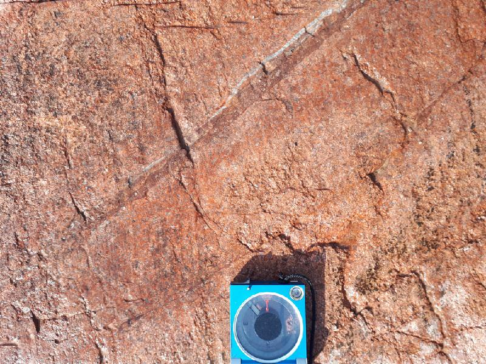

<!DOCTYPE html>
<head>    
    <meta http-equiv="content-type" content="text/html; charset=UTF-8" />
    
        <script>
            L_NO_TOUCH = false;
            L_DISABLE_3D = false;
        </script>
    
    <style>html, body {width: 100%;height: 100%;margin: 0;padding: 0;}</style>
    <style>#map {position:absolute;top:0;bottom:0;right:0;left:0;}</style>
    <script src="https://cdn.jsdelivr.net/npm/leaflet@1.6.0/dist/leaflet.js"></script>
    <script src="https://code.jquery.com/jquery-1.12.4.min.js"></script>
    <script src="https://maxcdn.bootstrapcdn.com/bootstrap/3.2.0/js/bootstrap.min.js"></script>
    <script src="https://cdnjs.cloudflare.com/ajax/libs/Leaflet.awesome-markers/2.0.2/leaflet.awesome-markers.js"></script>
    <link rel="stylesheet" href="https://cdn.jsdelivr.net/npm/leaflet@1.6.0/dist/leaflet.css"/>
    <link rel="stylesheet" href="https://maxcdn.bootstrapcdn.com/bootstrap/3.2.0/css/bootstrap.min.css"/>
    <link rel="stylesheet" href="https://maxcdn.bootstrapcdn.com/bootstrap/3.2.0/css/bootstrap-theme.min.css"/>
    <link rel="stylesheet" href="https://maxcdn.bootstrapcdn.com/font-awesome/4.6.3/css/font-awesome.min.css"/>
    <link rel="stylesheet" href="https://cdnjs.cloudflare.com/ajax/libs/Leaflet.awesome-markers/2.0.2/leaflet.awesome-markers.css"/>
    <link rel="stylesheet" href="https://cdn.jsdelivr.net/gh/python-visualization/folium/folium/templates/leaflet.awesome.rotate.min.css"/>
    
            <meta name="viewport" content="width=device-width,
                initial-scale=1.0, maximum-scale=1.0, user-scalable=no" />
            <style>
                #map_f6eba064b381400391ccfa8636c11896 {
                    position: relative;
                    width: 100.0%;
                    height: 100.0%;
                    left: 0.0%;
                    top: 0.0%;
                }
            </style>
        
    <script src="https://cdnjs.cloudflare.com/ajax/libs/leaflet-locatecontrol/0.66.2/L.Control.Locate.min.js"></script>
    <link rel="stylesheet" href="https://cdnjs.cloudflare.com/ajax/libs/leaflet-locatecontrol/0.66.2/L.Control.Locate.min.css"/>
    <link rel="stylesheet" href="styles.css"/>
</head>
<body>    
    
            <div class="folium-map" id="map_f6eba064b381400391ccfa8636c11896" ></div>
        
</body>
<script>    
    
            var map_f6eba064b381400391ccfa8636c11896 = L.map(
                "map_f6eba064b381400391ccfa8636c11896",
                {
                    center: [60.12234632531181, 19.908630268648267],
                    crs: L.CRS.EPSG3857,
                    zoom: 10,
                    zoomControl: true,
                    preferCanvas: false,
                }
            );

            

        
    
            var tile_layer_25f772b5b5b842fead62aa32597c1e77 = L.tileLayer(
                "https://{s}.tile.openstreetmap.org/{z}/{x}/{y}.png",
                {"attribution": "Data by \u0026copy; \u003ca href=\"http://openstreetmap.org\"\u003eOpenStreetMap\u003c/a\u003e, under \u003ca href=\"http://www.openstreetmap.org/copyright\"\u003eODbL\u003c/a\u003e.", "detectRetina": false, "maxNativeZoom": 18, "maxZoom": 18, "minZoom": 0, "noWrap": false, "opacity": 1, "subdomains": "abc", "tms": false}
            ).addTo(map_f6eba064b381400391ccfa8636c11896);
        
    
            var marker_228cd8edbb5d44d690e267fae4f1931d = L.marker(
                [60.05250053945929, 20.315122408792377],
                {}
            ).addTo(map_f6eba064b381400391ccfa8636c11896);
        
    
            var icon_fe4da4f7255b40e9b7f5679b7544a722 = L.AwesomeMarkers.icon(
                {"extraClasses": "fa-rotate-0", "icon": "glyphicon-stop", "iconColor": "white", "markerColor": "lightgray", "prefix": "glyphicon"}
            );
            marker_228cd8edbb5d44d690e267fae4f1931d.setIcon(icon_fe4da4f7255b40e9b7f5679b7544a722);
        
    
        var popup_77eaebdafdf44f66becac3a01fac2e5e = L.popup({"maxWidth": "100%"});

        
            var html_dead9fcc33ee46ffb0901488e8139e62 = $(`<div id="html_dead9fcc33ee46ffb0901488e8139e62" style="width: 100.0%; height: 100.0%;"><h3>JENG-2020-36</h3> <h4>Planar Structures</h4> <table> <thead> <tr> <th align="right">DIP</th> <th align="right">DIRECTION_OF_DIP</th> <th align="left">STYPE_TEXT</th> <th align="left">FOL_TYPE_TEXT</th> </tr> </thead> <tbody> <tr> <td align="right">75</td> <td align="right">356</td> <td align="left">Fault</td> <td align="left"></td> </tr> </tbody> </table> <h4></h4> <h4></h4> <h4>Observation remarks</h4> <p>Major fault with no clear movement. Still it is big enough so that clearly can be recognised.</p> <h4>Images</h4></div>`)[0];
            popup_77eaebdafdf44f66becac3a01fac2e5e.setContent(html_dead9fcc33ee46ffb0901488e8139e62);
        

        marker_228cd8edbb5d44d690e267fae4f1931d.bindPopup(popup_77eaebdafdf44f66becac3a01fac2e5e)
        ;

        
    
    
            marker_228cd8edbb5d44d690e267fae4f1931d.bindTooltip(
                `<div>
                     JENG-2020-36
                 </div>`,
                {"sticky": true}
            );
        
    
            var marker_433d136eefaf4eee94a39641c16e010e = L.marker(
                [60.05112687125802, 20.316994171589613],
                {}
            ).addTo(map_f6eba064b381400391ccfa8636c11896);
        
    
            var icon_1cab094250cd48ef91f027254efb5a1c = L.AwesomeMarkers.icon(
                {"extraClasses": "fa-rotate-0", "icon": "glyphicon-stop", "iconColor": "white", "markerColor": "lightgray", "prefix": "glyphicon"}
            );
            marker_433d136eefaf4eee94a39641c16e010e.setIcon(icon_1cab094250cd48ef91f027254efb5a1c);
        
    
        var popup_c5968d3601044d5f9170ff645c2355b1 = L.popup({"maxWidth": "100%"});

        
            var html_0c8576f888de4d1caaa9f453b7042150 = $(`<div id="html_0c8576f888de4d1caaa9f453b7042150" style="width: 100.0%; height: 100.0%;"><h3>JENG-2020-37</h3> <h4>Planar Structures</h4> <table> <thead> <tr> <th align="right">DIP</th> <th align="right">DIRECTION_OF_DIP</th> <th align="left">STYPE_TEXT</th> <th align="left">FOL_TYPE_TEXT</th> </tr> </thead> <tbody> <tr> <td align="right">82</td> <td align="right">347</td> <td align="left">Fault</td> <td align="left"></td> </tr> <tr> <td align="right">74</td> <td align="right">17</td> <td align="left">Fault</td> <td align="left"></td> </tr> </tbody> </table> <h4></h4> <h4></h4> <h4>Observation remarks</h4> <p>A minor fault with dextral displacement. Secondary fracturing indicating dextral sense.</p> <h4>Images</h4></div>`)[0];
            popup_c5968d3601044d5f9170ff645c2355b1.setContent(html_0c8576f888de4d1caaa9f453b7042150);
        

        marker_433d136eefaf4eee94a39641c16e010e.bindPopup(popup_c5968d3601044d5f9170ff645c2355b1)
        ;

        
    
    
            marker_433d136eefaf4eee94a39641c16e010e.bindTooltip(
                `<div>
                     JENG-2020-37
                 </div>`,
                {"sticky": true}
            );
        
    
            var marker_dbcd5a7901f3453fb39fac11cc314472 = L.marker(
                [60.05083480384201, 20.31750898808241],
                {}
            ).addTo(map_f6eba064b381400391ccfa8636c11896);
        
    
            var icon_e2fa503f7b35463fb7255da37467ccf3 = L.AwesomeMarkers.icon(
                {"extraClasses": "fa-rotate-0", "icon": "glyphicon-stop", "iconColor": "white", "markerColor": "lightgray", "prefix": "glyphicon"}
            );
            marker_dbcd5a7901f3453fb39fac11cc314472.setIcon(icon_e2fa503f7b35463fb7255da37467ccf3);
        
    
        var popup_9c4fa44608b94e7389ef68bd53be75f7 = L.popup({"maxWidth": "100%"});

        
            var html_153afd16e1e44140afc16e317051479b = $(`<div id="html_153afd16e1e44140afc16e317051479b" style="width: 100.0%; height: 100.0%;"><h3>JENG-2020-38</h3> <h4>Planar Structures</h4> <table> <thead> <tr> <th align="right">DIP</th> <th align="right">DIRECTION_OF_DIP</th> <th align="left">STYPE_TEXT</th> <th align="left">FOL_TYPE_TEXT</th> </tr> </thead> <tbody> <tr> <td align="right">82</td> <td align="right">350</td> <td align="left">Fault</td> <td align="left"></td> </tr> <tr> <td align="right">72</td> <td align="right">95</td> <td align="left">Fault</td> <td align="left"></td> </tr> </tbody> </table> <h4></h4> <h4></h4> <h4>Observation remarks</h4> <p>Major fault with dextral steps indicating dextral displacement. Appearance is different from other faults with steps and some quartz as fracture filling. Other measurement is a fault with more quartz filling.</p> <h4>Images</h4></div>`)[0];
            popup_9c4fa44608b94e7389ef68bd53be75f7.setContent(html_153afd16e1e44140afc16e317051479b);
        

        marker_dbcd5a7901f3453fb39fac11cc314472.bindPopup(popup_9c4fa44608b94e7389ef68bd53be75f7)
        ;

        
    
    
            marker_dbcd5a7901f3453fb39fac11cc314472.bindTooltip(
                `<div>
                     JENG-2020-38
                 </div>`,
                {"sticky": true}
            );
        
    
            var marker_7b5fe49a5d23429dbaa89478b5dc9a0f = L.marker(
                [60.05039383191615, 20.318730734288692],
                {}
            ).addTo(map_f6eba064b381400391ccfa8636c11896);
        
    
            var icon_1236bbca0a0146bc9a892c2aba74c46c = L.AwesomeMarkers.icon(
                {"extraClasses": "fa-rotate-0", "icon": "glyphicon-stop", "iconColor": "white", "markerColor": "lightgray", "prefix": "glyphicon"}
            );
            marker_7b5fe49a5d23429dbaa89478b5dc9a0f.setIcon(icon_1236bbca0a0146bc9a892c2aba74c46c);
        
    
        var popup_fa04f185b9654cf693b683fbbbee3201 = L.popup({"maxWidth": "100%"});

        
            var html_434b7326239742be8dd4feabd926627b = $(`<div id="html_434b7326239742be8dd4feabd926627b" style="width: 100.0%; height: 100.0%;"><h3>JENG-2020-39</h3> <h4>Planar Structures</h4> <table> <thead> <tr> <th align="right">DIP</th> <th align="right">DIRECTION_OF_DIP</th> <th align="left">STYPE_TEXT</th> <th align="left">FOL_TYPE_TEXT</th> </tr> </thead> <tbody> <tr> <td align="right">83</td> <td align="right">334</td> <td align="left">Fault</td> <td align="left"></td> </tr> <tr> <td align="right">78</td> <td align="right">201</td> <td align="left">Fault</td> <td align="left"></td> </tr> </tbody> </table> <h4></h4> <h4></h4> <h4>Observation remarks</h4> <p>Dextral fault with the end of fault appearing here at this location. Having a display of the end of the fault and some wingcracks.</p> <h4>Images</h4></div>`)[0];
            popup_fa04f185b9654cf693b683fbbbee3201.setContent(html_434b7326239742be8dd4feabd926627b);
        

        marker_7b5fe49a5d23429dbaa89478b5dc9a0f.bindPopup(popup_fa04f185b9654cf693b683fbbbee3201)
        ;

        
    
    
            marker_7b5fe49a5d23429dbaa89478b5dc9a0f.bindTooltip(
                `<div>
                     JENG-2020-39
                 </div>`,
                {"sticky": true}
            );
        
    
            var marker_d8fcad90344644958a28438b8910f9c8 = L.marker(
                [60.06931912153959, 20.32519326545298],
                {}
            ).addTo(map_f6eba064b381400391ccfa8636c11896);
        
    
            var icon_57e33db01a434030ae0cbc17c8f15fa6 = L.AwesomeMarkers.icon(
                {"extraClasses": "fa-rotate-0", "icon": "glyphicon-stop", "iconColor": "white", "markerColor": "lightgray", "prefix": "glyphicon"}
            );
            marker_d8fcad90344644958a28438b8910f9c8.setIcon(icon_57e33db01a434030ae0cbc17c8f15fa6);
        
    
        var popup_bb9d7a18ebfe48b3bd78025998a05e8a = L.popup({"maxWidth": "100%"});

        
            var html_c5e8c0f1cf7240419ff76df2ffbb58a8 = $(`<div id="html_c5e8c0f1cf7240419ff76df2ffbb58a8" style="width: 100.0%; height: 100.0%;"><h3>JENG-2020-42</h3> <h4>Planar Structures</h4> <table> <thead> <tr> <th align="right">DIP</th> <th align="right">DIRECTION_OF_DIP</th> <th align="left">STYPE_TEXT</th> <th align="left">FOL_TYPE_TEXT</th> </tr> </thead> <tbody> <tr> <td align="right">88</td> <td align="right">167</td> <td align="left">Fault</td> <td align="left"></td> </tr> </tbody> </table> <h4></h4> <h4></h4> <h4>Observation remarks</h4> <p>A fault or major fracture. No clear kinematics.</p> <h4>Images</h4></div>`)[0];
            popup_bb9d7a18ebfe48b3bd78025998a05e8a.setContent(html_c5e8c0f1cf7240419ff76df2ffbb58a8);
        

        marker_d8fcad90344644958a28438b8910f9c8.bindPopup(popup_bb9d7a18ebfe48b3bd78025998a05e8a)
        ;

        
    
    
            marker_d8fcad90344644958a28438b8910f9c8.bindTooltip(
                `<div>
                     JENG-2020-42
                 </div>`,
                {"sticky": true}
            );
        
    
            var marker_b7bcc85216154c84ab470506bf743e70 = L.marker(
                [60.066672074608505, 20.273912446573377],
                {}
            ).addTo(map_f6eba064b381400391ccfa8636c11896);
        
    
            var icon_a8859f8a88294bbbabe551395d031497 = L.AwesomeMarkers.icon(
                {"extraClasses": "fa-rotate-0", "icon": "glyphicon-stop", "iconColor": "white", "markerColor": "lightgray", "prefix": "glyphicon"}
            );
            marker_b7bcc85216154c84ab470506bf743e70.setIcon(icon_a8859f8a88294bbbabe551395d031497);
        
    
        var popup_c805a66419be4d23b44a18ded9d3513e = L.popup({"maxWidth": "100%"});

        
            var html_6ad3bb93e89640388dcdefd4b03d9bed = $(`<div id="html_6ad3bb93e89640388dcdefd4b03d9bed" style="width: 100.0%; height: 100.0%;"><h3>JENG-2020-43</h3> <h4>Planar Structures</h4> <table> <thead> <tr> <th align="right">DIP</th> <th align="right">DIRECTION_OF_DIP</th> <th align="left">STYPE_TEXT</th> <th align="left">FOL_TYPE_TEXT</th> </tr> </thead> <tbody> <tr> <td align="right">84</td> <td align="right">175</td> <td align="left">Fault</td> <td align="left"></td> </tr> </tbody> </table> <h4></h4> <h4></h4> <h4>Observation remarks</h4> <p>Major fault with no clear fault sense. But a lot of hydrothermal alteration and also quartz filling.</p> <h4>Images</h4></div>`)[0];
            popup_c805a66419be4d23b44a18ded9d3513e.setContent(html_6ad3bb93e89640388dcdefd4b03d9bed);
        

        marker_b7bcc85216154c84ab470506bf743e70.bindPopup(popup_c805a66419be4d23b44a18ded9d3513e)
        ;

        
    
    
            marker_b7bcc85216154c84ab470506bf743e70.bindTooltip(
                `<div>
                     JENG-2020-43
                 </div>`,
                {"sticky": true}
            );
        
    
            var marker_72edb1ada160473bb3710495c29275fb = L.marker(
                [60.06712712813169, 20.27342151850462],
                {}
            ).addTo(map_f6eba064b381400391ccfa8636c11896);
        
    
            var icon_39885633bd6d409e854b6cb78966d6ba = L.AwesomeMarkers.icon(
                {"extraClasses": "fa-rotate-0", "icon": "glyphicon-stop", "iconColor": "white", "markerColor": "lightgray", "prefix": "glyphicon"}
            );
            marker_72edb1ada160473bb3710495c29275fb.setIcon(icon_39885633bd6d409e854b6cb78966d6ba);
        
    
        var popup_0c0d525d306f4cfea00b2ff65e4aaffd = L.popup({"maxWidth": "100%"});

        
            var html_cefbda021920411983288c418621589d = $(`<div id="html_cefbda021920411983288c418621589d" style="width: 100.0%; height: 100.0%;"><h3>JENG-2020-44</h3> <h4>Planar Structures</h4> <table> <thead> <tr> <th align="right">DIP</th> <th align="right">DIRECTION_OF_DIP</th> <th align="left">STYPE_TEXT</th> <th align="left">FOL_TYPE_TEXT</th> </tr> </thead> <tbody> <tr> <td align="right">84</td> <td align="right">85</td> <td align="left">Fault</td> <td align="left"></td> </tr> <tr> <td align="right">90</td> <td align="right">78</td> <td align="left">Fault</td> <td align="left"></td> </tr> </tbody> </table> <h4></h4> <h4></h4> <h4>Observation remarks</h4> <p>Two N-S trending faults or fractures with no clear movement. </p> <h4>Images</h4></div>`)[0];
            popup_0c0d525d306f4cfea00b2ff65e4aaffd.setContent(html_cefbda021920411983288c418621589d);
        

        marker_72edb1ada160473bb3710495c29275fb.bindPopup(popup_0c0d525d306f4cfea00b2ff65e4aaffd)
        ;

        
    
    
            marker_72edb1ada160473bb3710495c29275fb.bindTooltip(
                `<div>
                     JENG-2020-44
                 </div>`,
                {"sticky": true}
            );
        
    
            var marker_2f3fdef5bf3c42ef9acab8eca4956998 = L.marker(
                [59.99116738792509, 20.29854920692742],
                {}
            ).addTo(map_f6eba064b381400391ccfa8636c11896);
        
    
            var icon_017114dfa50245a8b33348019f62a763 = L.AwesomeMarkers.icon(
                {"extraClasses": "fa-rotate-0", "icon": "glyphicon-stop", "iconColor": "white", "markerColor": "lightgray", "prefix": "glyphicon"}
            );
            marker_2f3fdef5bf3c42ef9acab8eca4956998.setIcon(icon_017114dfa50245a8b33348019f62a763);
        
    
        var popup_18a1dc15d03c450dbb286360e770882e = L.popup({"maxWidth": "100%"});

        
            var html_2610c1698ef0412a8c99b8a89f52e501 = $(`<div id="html_2610c1698ef0412a8c99b8a89f52e501" style="width: 100.0%; height: 100.0%;"><h3>JENG-2020-45</h3> <h4>Planar Structures</h4> <table> <thead> <tr> <th align="right">DIP</th> <th align="right">DIRECTION_OF_DIP</th> <th align="left">STYPE_TEXT</th> <th align="left">FOL_TYPE_TEXT</th> </tr> </thead> <tbody> <tr> <td align="right">75</td> <td align="right">222</td> <td align="left">Foliation</td> <td align="left">Gneissic banding</td> </tr> <tr> <td align="right">72</td> <td align="right">204</td> <td align="left">Foliation</td> <td align="left">Gneissic banding</td> </tr> <tr> <td align="right">81</td> <td align="right">206</td> <td align="left">Foliation</td> <td align="left">Gneissic banding</td> </tr> <tr> <td align="right">68</td> <td align="right">219</td> <td align="left">Fault</td> <td align="left"></td> </tr> </tbody> </table> <h4></h4> <h4></h4> <h4>Observation remarks</h4> <p>Migmatitic quartzdiorite with some inclusions of amphibolite. The rock is distorted and locally also sheared. Fault is a fracture.</p> <h4>Images</h4></div>`)[0];
            popup_18a1dc15d03c450dbb286360e770882e.setContent(html_2610c1698ef0412a8c99b8a89f52e501);
        

        marker_2f3fdef5bf3c42ef9acab8eca4956998.bindPopup(popup_18a1dc15d03c450dbb286360e770882e)
        ;

        
    
    
            marker_2f3fdef5bf3c42ef9acab8eca4956998.bindTooltip(
                `<div>
                     JENG-2020-45
                 </div>`,
                {"sticky": true}
            );
        
    
            var marker_9a5f04c747ca4251ad975453d9e05aab = L.marker(
                [59.99423202127218, 20.299926856532693],
                {}
            ).addTo(map_f6eba064b381400391ccfa8636c11896);
        
    
            var icon_e95836ef876043efba2e0b46013104e1 = L.AwesomeMarkers.icon(
                {"extraClasses": "fa-rotate-0", "icon": "glyphicon-stop", "iconColor": "white", "markerColor": "lightgray", "prefix": "glyphicon"}
            );
            marker_9a5f04c747ca4251ad975453d9e05aab.setIcon(icon_e95836ef876043efba2e0b46013104e1);
        
    
        var popup_a8839b51a3a1491ebe59cf059e558a2a = L.popup({"maxWidth": "100%"});

        
            var html_a2135837d7c94d7d8a4e05288a449108 = $(`<div id="html_a2135837d7c94d7d8a4e05288a449108" style="width: 100.0%; height: 100.0%;"><h3>JENG-2020-47</h3> <h4>Planar Structures</h4> <table> <thead> <tr> <th align="right">DIP</th> <th align="right">DIRECTION_OF_DIP</th> <th align="left">STYPE_TEXT</th> <th align="left">FOL_TYPE_TEXT</th> </tr> </thead> <tbody> <tr> <td align="right">77</td> <td align="right">210</td> <td align="left">Foliation</td> <td align="left">Gneissic banding</td> </tr> </tbody> </table> <h4></h4> <h4></h4> <h4>Observation remarks</h4> <p>Contact between Rapakivi and Quartzdiorite. The quartzdiorite is homogenous and no migmatitic appearance.</p> <h4>Images</h4></div>`)[0];
            popup_a8839b51a3a1491ebe59cf059e558a2a.setContent(html_a2135837d7c94d7d8a4e05288a449108);
        

        marker_9a5f04c747ca4251ad975453d9e05aab.bindPopup(popup_a8839b51a3a1491ebe59cf059e558a2a)
        ;

        
    
    
            marker_9a5f04c747ca4251ad975453d9e05aab.bindTooltip(
                `<div>
                     JENG-2020-47
                 </div>`,
                {"sticky": true}
            );
        
    
            var marker_b5c4b127caf648e1bf27c456c4fc0619 = L.marker(
                [59.99860674608499, 20.295450082048777],
                {}
            ).addTo(map_f6eba064b381400391ccfa8636c11896);
        
    
            var icon_b9431a61863f485293099a584b539fc1 = L.AwesomeMarkers.icon(
                {"extraClasses": "fa-rotate-0", "icon": "glyphicon-stop", "iconColor": "white", "markerColor": "lightgray", "prefix": "glyphicon"}
            );
            marker_b5c4b127caf648e1bf27c456c4fc0619.setIcon(icon_b9431a61863f485293099a584b539fc1);
        
    
        var popup_4b4264c82a1a46f082ae958158b72ba2 = L.popup({"maxWidth": "100%"});

        
            var html_61619d211259423d83992a794cb4ee6a = $(`<div id="html_61619d211259423d83992a794cb4ee6a" style="width: 100.0%; height: 100.0%;"><h3>JENG-2020-49</h3> <h4>Planar Structures</h4> <table> <thead> <tr> <th align="right">DIP</th> <th align="right">DIRECTION_OF_DIP</th> <th align="left">STYPE_TEXT</th> <th align="left">FOL_TYPE_TEXT</th> </tr> </thead> <tbody> <tr> <td align="right">90</td> <td align="right">115</td> <td align="left">Fault</td> <td align="left"></td> </tr> </tbody> </table> <h4></h4> <h4></h4> <h4>Observation remarks</h4> <p>Quartz vein similar to other nearby, but different orientation.</p> <h4>Images</h4></div>`)[0];
            popup_4b4264c82a1a46f082ae958158b72ba2.setContent(html_61619d211259423d83992a794cb4ee6a);
        

        marker_b5c4b127caf648e1bf27c456c4fc0619.bindPopup(popup_4b4264c82a1a46f082ae958158b72ba2)
        ;

        
    
    
            marker_b5c4b127caf648e1bf27c456c4fc0619.bindTooltip(
                `<div>
                     JENG-2020-49
                 </div>`,
                {"sticky": true}
            );
        
    
            var marker_d8649f4c1f6d431f8569cf6b6356a14b = L.marker(
                [59.99871747102589, 20.295214466750625],
                {}
            ).addTo(map_f6eba064b381400391ccfa8636c11896);
        
    
            var icon_8ea00f41e6bd40aa9ce0c537cb5085b2 = L.AwesomeMarkers.icon(
                {"extraClasses": "fa-rotate-0", "icon": "glyphicon-stop", "iconColor": "white", "markerColor": "lightgray", "prefix": "glyphicon"}
            );
            marker_d8649f4c1f6d431f8569cf6b6356a14b.setIcon(icon_8ea00f41e6bd40aa9ce0c537cb5085b2);
        
    
        var popup_92673239adc3465099c3c96aba306790 = L.popup({"maxWidth": "100%"});

        
            var html_507b06c1048f4b5188c5aefef6377c26 = $(`<div id="html_507b06c1048f4b5188c5aefef6377c26" style="width: 100.0%; height: 100.0%;"><h3>JENG-2020-50</h3> <h4>Planar Structures</h4> <table> <thead> <tr> <th align="right">DIP</th> <th align="right">DIRECTION_OF_DIP</th> <th align="left">STYPE_TEXT</th> <th align="left">FOL_TYPE_TEXT</th> </tr> </thead> <tbody> <tr> <td align="right">81</td> <td align="right">155</td> <td align="left">Fault</td> <td align="left"></td> </tr> <tr> <td align="right">90</td> <td align="right">300</td> <td align="left">Fault</td> <td align="left"></td> </tr> <tr> <td align="right">85</td> <td align="right">308</td> <td align="left">Fault</td> <td align="left"></td> </tr> </tbody> </table> <h4></h4> <h4></h4> <h4>Observation remarks</h4> <p>Quartz fault with sinistral sense of shear and pseudotachylyte. Also several other veins and faults. </p> <h4>Images</h4></div>`)[0];
            popup_92673239adc3465099c3c96aba306790.setContent(html_507b06c1048f4b5188c5aefef6377c26);
        

        marker_d8649f4c1f6d431f8569cf6b6356a14b.bindPopup(popup_92673239adc3465099c3c96aba306790)
        ;

        
    
    
            marker_d8649f4c1f6d431f8569cf6b6356a14b.bindTooltip(
                `<div>
                     JENG-2020-50
                 </div>`,
                {"sticky": true}
            );
        
    
            var marker_d68ef7b589a14621a53a79479690e302 = L.marker(
                [59.998874673619866, 20.29490073211491],
                {}
            ).addTo(map_f6eba064b381400391ccfa8636c11896);
        
    
            var icon_0cc37ce2f18a45b09a0a2786d41b9e6f = L.AwesomeMarkers.icon(
                {"extraClasses": "fa-rotate-22", "icon": "glyphicon-arrow-up", "iconColor": "white", "markerColor": "blue", "prefix": "glyphicon"}
            );
            marker_d68ef7b589a14621a53a79479690e302.setIcon(icon_0cc37ce2f18a45b09a0a2786d41b9e6f);
        
    
        var popup_7dd697d285204be2ac859696e4202e3e = L.popup({"maxWidth": "100%"});

        
            var html_0702a05e2ed64a1f97961685cb9ba1d7 = $(`<div id="html_0702a05e2ed64a1f97961685cb9ba1d7" style="width: 100.0%; height: 100.0%;"><h3>JENG-2020-51</h3> <h4>Planar Structures</h4> <table> <thead> <tr> <th align="right">DIP</th> <th align="right">DIRECTION_OF_DIP</th> <th align="left">STYPE_TEXT</th> <th align="left">FOL_TYPE_TEXT</th> </tr> </thead> <tbody> <tr> <td align="right">89</td> <td align="right">15</td> <td align="left">Fault</td> <td align="left"></td> </tr> <tr> <td align="right">80</td> <td align="right">335</td> <td align="left">Fault</td> <td align="left"></td> </tr> <tr> <td align="right">88</td> <td align="right">320</td> <td align="left">Fault</td> <td align="left"></td> </tr> <tr> <td align="right">85</td> <td align="right">17</td> <td align="left">Fault</td> <td align="left"></td> </tr> </tbody> </table> <h4>Linear Structures</h4> <table> <thead> <tr> <th align="right">DIRECTION</th> <th align="right">PLUNGE</th> <th align="left">STYPE_TEXT</th> </tr> </thead> <tbody> <tr> <td align="right">22</td> <td align="right">7</td> <td align="left">Lineation</td> </tr> </tbody> </table> <h4></h4> <h4>Observation remarks</h4> <p>Major fault with sinistral sense of shear. The fault has quartz as filling and a other mineral with orange streak. The secondary measurements are wing-cracks. Fault 85/017 with slickenside lineation.</p> <h4>Images</h4></div>`)[0];
            popup_7dd697d285204be2ac859696e4202e3e.setContent(html_0702a05e2ed64a1f97961685cb9ba1d7);
        

        marker_d68ef7b589a14621a53a79479690e302.bindPopup(popup_7dd697d285204be2ac859696e4202e3e)
        ;

        
    
    
            marker_d68ef7b589a14621a53a79479690e302.bindTooltip(
                `<div>
                     JENG-2020-51
                 </div>`,
                {"sticky": true}
            );
        
    
            var marker_2d8c1836f7364fd2a370c38581afe2d6 = L.marker(
                [60.0257932394743, 20.009082024917006],
                {}
            ).addTo(map_f6eba064b381400391ccfa8636c11896);
        
    
            var icon_82556a35638f40ea87bc4cb20e14164c = L.AwesomeMarkers.icon(
                {"extraClasses": "fa-rotate-0", "icon": "glyphicon-stop", "iconColor": "white", "markerColor": "lightgray", "prefix": "glyphicon"}
            );
            marker_2d8c1836f7364fd2a370c38581afe2d6.setIcon(icon_82556a35638f40ea87bc4cb20e14164c);
        
    
        var popup_5de7e4276d0f4378ac1dd25a61ba5064 = L.popup({"maxWidth": "100%"});

        
            var html_877d01add5b04b04ab199aaa657934b9 = $(`<div id="html_877d01add5b04b04ab199aaa657934b9" style="width: 100.0%; height: 100.0%;"><h3>JENG-2021-2</h3> <h4>Planar Structures</h4> <table> <thead> <tr> <th align="right">DIP</th> <th align="right">DIRECTION_OF_DIP</th> <th align="left">STYPE_TEXT</th> <th align="left">FOL_TYPE_TEXT</th> </tr> </thead> <tbody> <tr> <td align="right">76</td> <td align="right">72</td> <td align="left">Fault</td> <td align="left"></td> </tr> <tr> <td align="right">82</td> <td align="right">128</td> <td align="left">Fault</td> <td align="left"></td> </tr> <tr> <td align="right">82</td> <td align="right">133</td> <td align="left">Fault</td> <td align="left"></td> </tr> </tbody> </table> <h4></h4> <h4></h4> <h4>Observation remarks</h4> <p>Rocktype old granitic. Measurements 2-3 are secondary fracturing.</p> <h4>Images</h4> <p><a href="kapalo_imgs/JENG-2021-2.k1@3081831509957488170.jpg"></a>Fault from above.</p></div>`)[0];
            popup_5de7e4276d0f4378ac1dd25a61ba5064.setContent(html_877d01add5b04b04ab199aaa657934b9);
        

        marker_2d8c1836f7364fd2a370c38581afe2d6.bindPopup(popup_5de7e4276d0f4378ac1dd25a61ba5064)
        ;

        
    
    
            marker_2d8c1836f7364fd2a370c38581afe2d6.bindTooltip(
                `<div>
                     JENG-2021-2
                 </div>`,
                {"sticky": true}
            );
        
    
            var marker_46adbd6cc1ae4426b3b90ad67c31aff9 = L.marker(
                [60.22590505890548, 19.68289129436016],
                {}
            ).addTo(map_f6eba064b381400391ccfa8636c11896);
        
    
            var icon_581af1d24af94c5cb2144db99b29b9e4 = L.AwesomeMarkers.icon(
                {"extraClasses": "fa-rotate-0", "icon": "glyphicon-stop", "iconColor": "white", "markerColor": "lightgray", "prefix": "glyphicon"}
            );
            marker_46adbd6cc1ae4426b3b90ad67c31aff9.setIcon(icon_581af1d24af94c5cb2144db99b29b9e4);
        
    
        var popup_3e4247c975f540a0a38cf5305de57f22 = L.popup({"maxWidth": "100%"});

        
            var html_4f938d95fa964661ad3e9e1ac9eb6e15 = $(`<div id="html_4f938d95fa964661ad3e9e1ac9eb6e15" style="width: 100.0%; height: 100.0%;"><h3>JENG-2021-3</h3> <h4>Planar Structures</h4> <table> <thead> <tr> <th align="right">DIP</th> <th align="right">DIRECTION_OF_DIP</th> <th align="left">STYPE_TEXT</th> <th align="left">FOL_TYPE_TEXT</th> </tr> </thead> <tbody> <tr> <td align="right">87</td> <td align="right">190</td> <td align="left">Fault</td> <td align="left"></td> </tr> <tr> <td align="right">88</td> <td align="right">349</td> <td align="left">Fault</td> <td align="left"></td> </tr> <tr> <td align="right">83</td> <td align="right">158</td> <td align="left">Fault</td> <td align="left"></td> </tr> <tr> <td align="right">79</td> <td align="right">189</td> <td align="left">Fault</td> <td align="left"></td> </tr> <tr> <td align="right">81</td> <td align="right">202</td> <td align="left">Fault</td> <td align="left"></td> </tr> <tr> <td align="right">86</td> <td align="right">240</td> <td align="left">Fault</td> <td align="left"></td> </tr> </tbody> </table> <h4></h4> <h4></h4> <h4>Observation remarks</h4> <p>Rapakivi with sinistral hydrothermal fault. Measurements from W to E on outcrop. Classical step-over between to sinistral faults. Also a ~N-S fault last measurement.</p> <h4>Images</h4></div>`)[0];
            popup_3e4247c975f540a0a38cf5305de57f22.setContent(html_4f938d95fa964661ad3e9e1ac9eb6e15);
        

        marker_46adbd6cc1ae4426b3b90ad67c31aff9.bindPopup(popup_3e4247c975f540a0a38cf5305de57f22)
        ;

        
    
    
            marker_46adbd6cc1ae4426b3b90ad67c31aff9.bindTooltip(
                `<div>
                     JENG-2021-3
                 </div>`,
                {"sticky": true}
            );
        
    
            var marker_0a46118b60c24131b9b2215ec412c00f = L.marker(
                [60.232625543139875, 19.5356635004282],
                {}
            ).addTo(map_f6eba064b381400391ccfa8636c11896);
        
    
            var icon_3b677ffd74474528b792167685dacf17 = L.AwesomeMarkers.icon(
                {"extraClasses": "fa-rotate-0", "icon": "glyphicon-stop", "iconColor": "white", "markerColor": "lightgray", "prefix": "glyphicon"}
            );
            marker_0a46118b60c24131b9b2215ec412c00f.setIcon(icon_3b677ffd74474528b792167685dacf17);
        
    
        var popup_3db9c07625944e00b4c8dc19b054287b = L.popup({"maxWidth": "100%"});

        
            var html_a6386de5cc11447ea025daab1e080f99 = $(`<div id="html_a6386de5cc11447ea025daab1e080f99" style="width: 100.0%; height: 100.0%;"><h3>JENG-2021-4</h3> <h4>Planar Structures</h4> <table> <thead> <tr> <th align="right">DIP</th> <th align="right">DIRECTION_OF_DIP</th> <th align="left">STYPE_TEXT</th> <th align="left">FOL_TYPE_TEXT</th> </tr> </thead> <tbody> <tr> <td align="right">73</td> <td align="right">337</td> <td align="left">Fault</td> <td align="left"></td> </tr> <tr> <td align="right">84</td> <td align="right">297</td> <td align="left">Fault</td> <td align="left"></td> </tr> <tr> <td align="right">76</td> <td align="right">295</td> <td align="left">Fault</td> <td align="left"></td> </tr> </tbody> </table> <h4></h4> <h4></h4> <h4>Observation remarks</h4> <p>Rapakivi E-W fault. Uncertain kinematics, but extensional fractures seem to indicate sinistral movement.</p> <h4>Images</h4> <p><a href="kapalo_imgs/JENG-2021-4.k1@83604549515010682.jpg"></a>Photo along fault towards E.</p></div>`)[0];
            popup_3db9c07625944e00b4c8dc19b054287b.setContent(html_a6386de5cc11447ea025daab1e080f99);
        

        marker_0a46118b60c24131b9b2215ec412c00f.bindPopup(popup_3db9c07625944e00b4c8dc19b054287b)
        ;

        
    
    
            marker_0a46118b60c24131b9b2215ec412c00f.bindTooltip(
                `<div>
                     JENG-2021-4
                 </div>`,
                {"sticky": true}
            );
        
    
            var marker_441d8a91a69245a99aa628b7dba5e5b3 = L.marker(
                [60.23110192269087, 19.536603866145015],
                {}
            ).addTo(map_f6eba064b381400391ccfa8636c11896);
        
    
            var icon_2cf035c37cfb4883bc4c7c829396ac20 = L.AwesomeMarkers.icon(
                {"extraClasses": "fa-rotate-0", "icon": "glyphicon-stop", "iconColor": "white", "markerColor": "lightgray", "prefix": "glyphicon"}
            );
            marker_441d8a91a69245a99aa628b7dba5e5b3.setIcon(icon_2cf035c37cfb4883bc4c7c829396ac20);
        
    
        var popup_09a858b89048474fb31bb61bb2fe6d4a = L.popup({"maxWidth": "100%"});

        
            var html_b353cb5bcc5c4989adf245548744ee2c = $(`<div id="html_b353cb5bcc5c4989adf245548744ee2c" style="width: 100.0%; height: 100.0%;"><h3>JENG-2021-5</h3> <h4>Planar Structures</h4> <table> <thead> <tr> <th align="right">DIP</th> <th align="right">DIRECTION_OF_DIP</th> <th align="left">STYPE_TEXT</th> <th align="left">FOL_TYPE_TEXT</th> </tr> </thead> <tbody> <tr> <td align="right">83</td> <td align="right">144</td> <td align="left">Fault</td> <td align="left"></td> </tr> <tr> <td align="right">85</td> <td align="right">189</td> <td align="left">Fault</td> <td align="left"></td> </tr> <tr> <td align="right">89</td> <td align="right">351</td> <td align="left">Fault</td> <td align="left"></td> </tr> </tbody> </table> <h4></h4> <h4></h4> <h4>Observation remarks</h4> <p>NE-SW orientated fault in Rapakivi. Clear hydrothermal alteration with quartz filling in fault. Measurements 2-3 are extensional fracturing.</p> <h4>Images</h4> <p><a href="kapalo_imgs/JENG-2021-5.k1@6661866512202191482.jpg"></a>Main fault <a href="kapalo_imgs/JENG-2021-5.k2@799533466720694217.jpg"></a>Along fault towards NE</p></div>`)[0];
            popup_09a858b89048474fb31bb61bb2fe6d4a.setContent(html_b353cb5bcc5c4989adf245548744ee2c);
        

        marker_441d8a91a69245a99aa628b7dba5e5b3.bindPopup(popup_09a858b89048474fb31bb61bb2fe6d4a)
        ;

        
    
    
            marker_441d8a91a69245a99aa628b7dba5e5b3.bindTooltip(
                `<div>
                     JENG-2021-5
                 </div>`,
                {"sticky": true}
            );
        
    
            var marker_4302e9c90ea14b289601d971153f86d9 = L.marker(
                [60.25046508293599, 19.522160841152072],
                {}
            ).addTo(map_f6eba064b381400391ccfa8636c11896);
        
    
            var icon_bada78f68c0f44c390d4c54536db21f3 = L.AwesomeMarkers.icon(
                {"extraClasses": "fa-rotate-0", "icon": "glyphicon-stop", "iconColor": "white", "markerColor": "lightgray", "prefix": "glyphicon"}
            );
            marker_4302e9c90ea14b289601d971153f86d9.setIcon(icon_bada78f68c0f44c390d4c54536db21f3);
        
    
        var popup_26381f36cdb546bf98076cc5629cebe0 = L.popup({"maxWidth": "100%"});

        
            var html_983fe891fdba47d0b0a87f69a1ed18ee = $(`<div id="html_983fe891fdba47d0b0a87f69a1ed18ee" style="width: 100.0%; height: 100.0%;"><h3>JENG-2021-6</h3> <h4>Planar Structures</h4> <table> <thead> <tr> <th align="right">DIP</th> <th align="right">DIRECTION_OF_DIP</th> <th align="left">STYPE_TEXT</th> <th align="left">FOL_TYPE_TEXT</th> </tr> </thead> <tbody> <tr> <td align="right">88</td> <td align="right">145</td> <td align="left">Fault</td> <td align="left"></td> </tr> <tr> <td align="right">87</td> <td align="right">321</td> <td align="left">Fault</td> <td align="left"></td> </tr> <tr> <td align="right">89</td> <td align="right">180</td> <td align="left">Fault</td> <td align="left"></td> </tr> <tr> <td align="right">89</td> <td align="right">333</td> <td align="left">Fault</td> <td align="left"></td> </tr> <tr> <td align="right">88</td> <td align="right">12</td> <td align="left">Fault</td> <td align="left"></td> </tr> <tr> <td align="right">89</td> <td align="right">356</td> <td align="left">Fault</td> <td align="left"></td> </tr> <tr> <td align="right">89</td> <td align="right">141</td> <td align="left">Fault</td> <td align="left"></td> </tr> </tbody> </table> <h4></h4> <h4></h4> <h4>Observation remarks</h4> <p>Rapakivi with severe hydrothermal faults and fractures. Main fault orientation NE-SW. The fault have fault breccia and quartz. Main fault  possibly dextral. The last fault #7 is displacing fault #6.</p> <h4>Images</h4> <p><a href="kapalo_imgs/JENG-2021-6.k1@8857327056242677147.jpg"></a>Main fault <a href="kapalo_imgs/JENG-2021-6.k2@3923352744239319103.jpg"></a>Main fault <a href="kapalo_imgs/JENG-2021-6.k3@8782151536614645799.jpg">('Fault #6 &amp; #7', 'JENG-2021-6.k3')</a> <a href="kapalo_imgs/JENG-2021-6.k4@8018021332290025911.jpg">('Step-over ', 'JENG-2021-6.k4')</a></p></div>`)[0];
            popup_26381f36cdb546bf98076cc5629cebe0.setContent(html_983fe891fdba47d0b0a87f69a1ed18ee);
        

        marker_4302e9c90ea14b289601d971153f86d9.bindPopup(popup_26381f36cdb546bf98076cc5629cebe0)
        ;

        
    
    
            marker_4302e9c90ea14b289601d971153f86d9.bindTooltip(
                `<div>
                     JENG-2021-6
                 </div>`,
                {"sticky": true}
            );
        
    
            var marker_54748283809342df9dc293c459bca726 = L.marker(
                [60.22963001858443, 19.536126852035522],
                {}
            ).addTo(map_f6eba064b381400391ccfa8636c11896);
        
    
            var icon_4af4dc2b8b774e1284ebd0417234ff4b = L.AwesomeMarkers.icon(
                {"extraClasses": "fa-rotate-0", "icon": "glyphicon-stop", "iconColor": "white", "markerColor": "lightgray", "prefix": "glyphicon"}
            );
            marker_54748283809342df9dc293c459bca726.setIcon(icon_4af4dc2b8b774e1284ebd0417234ff4b);
        
    
        var popup_4f82068f079f4a0dbad007fc498289d4 = L.popup({"maxWidth": "100%"});

        
            var html_8941be299f33477b8e42c1cbf15358a1 = $(`<div id="html_8941be299f33477b8e42c1cbf15358a1" style="width: 100.0%; height: 100.0%;"><h3>JENG-2021-7</h3> <h4>Planar Structures</h4> <table> <thead> <tr> <th align="right">DIP</th> <th align="right">DIRECTION_OF_DIP</th> <th align="left">STYPE_TEXT</th> <th align="left">FOL_TYPE_TEXT</th> </tr> </thead> <tbody> <tr> <td align="right">88</td> <td align="right">326</td> <td align="left">Fault</td> <td align="left"></td> </tr> <tr> <td align="right">84</td> <td align="right">358</td> <td align="left">Fault</td> <td align="left"></td> </tr> <tr> <td align="right">81</td> <td align="right">2</td> <td align="left">Fault</td> <td align="left"></td> </tr> </tbody> </table> <h4></h4> <h4></h4> <h4>Observation remarks</h4> <p>Rapakivi with dextral fault with classical step-over.</p> <h4>Images</h4> <p><a href="kapalo_imgs/JENG-2021-7.k1@4876781378486370637.jpg"></a>Näin fault and step-over dextral.</p></div>`)[0];
            popup_4f82068f079f4a0dbad007fc498289d4.setContent(html_8941be299f33477b8e42c1cbf15358a1);
        

        marker_54748283809342df9dc293c459bca726.bindPopup(popup_4f82068f079f4a0dbad007fc498289d4)
        ;

        
    
    
            marker_54748283809342df9dc293c459bca726.bindTooltip(
                `<div>
                     JENG-2021-7
                 </div>`,
                {"sticky": true}
            );
        
    
            var marker_c93d9cbea8cd4f16aef2d3ae9f98b8a4 = L.marker(
                [60.22857712581754, 19.534468157216907],
                {}
            ).addTo(map_f6eba064b381400391ccfa8636c11896);
        
    
            var icon_62d58aedf42f45299606e43695583757 = L.AwesomeMarkers.icon(
                {"extraClasses": "fa-rotate-0", "icon": "glyphicon-stop", "iconColor": "white", "markerColor": "lightgray", "prefix": "glyphicon"}
            );
            marker_c93d9cbea8cd4f16aef2d3ae9f98b8a4.setIcon(icon_62d58aedf42f45299606e43695583757);
        
    
        var popup_28f9a898765044b7931380aaa2295991 = L.popup({"maxWidth": "100%"});

        
            var html_116dd1fb241a4b459caf6e52f7fa6770 = $(`<div id="html_116dd1fb241a4b459caf6e52f7fa6770" style="width: 100.0%; height: 100.0%;"><h3>JENG-2021-8</h3> <h4>Planar Structures</h4> <table> <thead> <tr> <th align="right">DIP</th> <th align="right">DIRECTION_OF_DIP</th> <th align="left">STYPE_TEXT</th> <th align="left">FOL_TYPE_TEXT</th> </tr> </thead> <tbody> <tr> <td align="right">89</td> <td align="right">26</td> <td align="left">Fault</td> <td align="left"></td> </tr> <tr> <td align="right">89</td> <td align="right">237</td> <td align="left">Fault</td> <td align="left"></td> </tr> <tr> <td align="right">88</td> <td align="right">62</td> <td align="left">Fault</td> <td align="left"></td> </tr> </tbody> </table> <h4></h4> <h4></h4> <h4>Observation remarks</h4> <p>Classical dextral fault with some hydrothermal alteration.</p> <h4>Images</h4> <p><a href="kapalo_imgs/JENG-2021-8.k1@624841673750049480.jpg"></a>Along fault towards SE <a href="kapalo_imgs/JENG-2021-8.k2@6261782221383283929.jpg"></a>Along fault towards SE</p></div>`)[0];
            popup_28f9a898765044b7931380aaa2295991.setContent(html_116dd1fb241a4b459caf6e52f7fa6770);
        

        marker_c93d9cbea8cd4f16aef2d3ae9f98b8a4.bindPopup(popup_28f9a898765044b7931380aaa2295991)
        ;

        
    
    
            marker_c93d9cbea8cd4f16aef2d3ae9f98b8a4.bindTooltip(
                `<div>
                     JENG-2021-8
                 </div>`,
                {"sticky": true}
            );
        
    
            var marker_fea19f9013cc490b92e9c10bf810f165 = L.marker(
                [60.2282620081678, 19.53459095209837],
                {}
            ).addTo(map_f6eba064b381400391ccfa8636c11896);
        
    
            var icon_327ddb8fccd84461b84c28ac9287da1e = L.AwesomeMarkers.icon(
                {"extraClasses": "fa-rotate-0", "icon": "glyphicon-stop", "iconColor": "white", "markerColor": "lightgray", "prefix": "glyphicon"}
            );
            marker_fea19f9013cc490b92e9c10bf810f165.setIcon(icon_327ddb8fccd84461b84c28ac9287da1e);
        
    
        var popup_f9cde07cf5ae4e6d8448cde75a8c98eb = L.popup({"maxWidth": "100%"});

        
            var html_858246d69a824230abae087d3845f950 = $(`<div id="html_858246d69a824230abae087d3845f950" style="width: 100.0%; height: 100.0%;"><h3>JENG-2021-9</h3> <h4>Planar Structures</h4> <table> <thead> <tr> <th align="right">DIP</th> <th align="right">DIRECTION_OF_DIP</th> <th align="left">STYPE_TEXT</th> <th align="left">FOL_TYPE_TEXT</th> </tr> </thead> <tbody> <tr> <td align="right">87</td> <td align="right">126</td> <td align="left">Fault</td> <td align="left"></td> </tr> <tr> <td align="right">89</td> <td align="right">331</td> <td align="left">Fault</td> <td align="left"></td> </tr> <tr> <td align="right">88</td> <td align="right">139</td> <td align="left">Fault</td> <td align="left"></td> </tr> <tr> <td align="right">86</td> <td align="right">328</td> <td align="left">Fault</td> <td align="left"></td> </tr> </tbody> </table> <h4></h4> <h4></h4> <h4>Observation remarks</h4> <p>Several hydrothermal faults with distinct alteration halo.</p> <h4>Images</h4> <p><a href="kapalo_imgs/JENG-2021-9.k1@4655809258233919522.jpg"></a>Most eastern fault</p></div>`)[0];
            popup_f9cde07cf5ae4e6d8448cde75a8c98eb.setContent(html_858246d69a824230abae087d3845f950);
        

        marker_fea19f9013cc490b92e9c10bf810f165.bindPopup(popup_f9cde07cf5ae4e6d8448cde75a8c98eb)
        ;

        
    
    
            marker_fea19f9013cc490b92e9c10bf810f165.bindTooltip(
                `<div>
                     JENG-2021-9
                 </div>`,
                {"sticky": true}
            );
        
    
            var marker_7a8c182ec0774028b0adc665f97ac005 = L.marker(
                [60.164454518817365, 19.789619743824005],
                {}
            ).addTo(map_f6eba064b381400391ccfa8636c11896);
        
    
            var icon_269eac92d20e4209a087d68993585b51 = L.AwesomeMarkers.icon(
                {"extraClasses": "fa-rotate-23", "icon": "glyphicon-arrow-up", "iconColor": "white", "markerColor": "blue", "prefix": "glyphicon"}
            );
            marker_7a8c182ec0774028b0adc665f97ac005.setIcon(icon_269eac92d20e4209a087d68993585b51);
        
    
        var popup_bb8926b0169e4b51954c54062c35f9d1 = L.popup({"maxWidth": "100%"});

        
            var html_2b41eab875ad4f4f819f5a755c219668 = $(`<div id="html_2b41eab875ad4f4f819f5a755c219668" style="width: 100.0%; height: 100.0%;"><h3>JENG-2021-10</h3> <h4>Planar Structures</h4> <table> <thead> <tr> <th align="right">DIP</th> <th align="right">DIRECTION_OF_DIP</th> <th align="left">STYPE_TEXT</th> <th align="left">FOL_TYPE_TEXT</th> </tr> </thead> <tbody> <tr> <td align="right">83</td> <td align="right">297</td> <td align="left">Fault</td> <td align="left"></td> </tr> </tbody> </table> <h4>Linear Structures</h4> <table> <thead> <tr> <th align="right">DIRECTION</th> <th align="right">PLUNGE</th> <th align="left">STYPE_TEXT</th> </tr> </thead> <tbody> <tr> <td align="right">23</td> <td align="right">5</td> <td align="left">Lineation</td> </tr> </tbody> </table> <h4></h4> <h4>Observation remarks</h4> <p>Dextral fault with distinct fault gouge and clay almost 10 cm thick. An excellent location for sample.</p> <h4>Images</h4> <p><a href="kapalo_imgs/JENG-2021-10.k1@4749691382803194223.jpg"></a>Along fault towards NE</p></div>`)[0];
            popup_bb8926b0169e4b51954c54062c35f9d1.setContent(html_2b41eab875ad4f4f819f5a755c219668);
        

        marker_7a8c182ec0774028b0adc665f97ac005.bindPopup(popup_bb8926b0169e4b51954c54062c35f9d1)
        ;

        
    
    
            marker_7a8c182ec0774028b0adc665f97ac005.bindTooltip(
                `<div>
                     JENG-2021-10
                 </div>`,
                {"sticky": true}
            );
        
    
            var marker_6317718f61704f51a23958af4d800378 = L.marker(
                [60.16569797415286, 19.789319252595305],
                {}
            ).addTo(map_f6eba064b381400391ccfa8636c11896);
        
    
            var icon_84df7e08443c4ef399acb2bb86365038 = L.AwesomeMarkers.icon(
                {"extraClasses": "fa-rotate-212", "icon": "glyphicon-arrow-up", "iconColor": "white", "markerColor": "blue", "prefix": "glyphicon"}
            );
            marker_6317718f61704f51a23958af4d800378.setIcon(icon_84df7e08443c4ef399acb2bb86365038);
        
    
        var popup_ba0a1f0fed0b485798bbb8518b8d9303 = L.popup({"maxWidth": "100%"});

        
            var html_30750a704f19407e8e592719c8567705 = $(`<div id="html_30750a704f19407e8e592719c8567705" style="width: 100.0%; height: 100.0%;"><h3>JENG-2021-11</h3> <h4>Planar Structures</h4> <table> <thead> <tr> <th align="right">DIP</th> <th align="right">DIRECTION_OF_DIP</th> <th align="left">STYPE_TEXT</th> <th align="left">FOL_TYPE_TEXT</th> </tr> </thead> <tbody> <tr> <td align="right">88</td> <td align="right">306</td> <td align="left">Fault</td> <td align="left"></td> </tr> </tbody> </table> <h4>Linear Structures</h4> <table> <thead> <tr> <th align="right">DIRECTION</th> <th align="right">PLUNGE</th> <th align="left">STYPE_TEXT</th> </tr> </thead> <tbody> <tr> <td align="right">212</td> <td align="right">11</td> <td align="left">Lineation</td> </tr> </tbody> </table> <h4></h4> <h4>Observation remarks</h4> <p>Dextral fault with clay and fault gouge. The core of fault is approximately 4 cm. Sample is possible to take here. Lineation a bit uncertain.</p> <h4>Images</h4> <p><a href="kapalo_imgs/JENG-2021-11.k1@4747641618665199994.jpg"></a>Along fault towards NE.</p></div>`)[0];
            popup_ba0a1f0fed0b485798bbb8518b8d9303.setContent(html_30750a704f19407e8e592719c8567705);
        

        marker_6317718f61704f51a23958af4d800378.bindPopup(popup_ba0a1f0fed0b485798bbb8518b8d9303)
        ;

        
    
    
            marker_6317718f61704f51a23958af4d800378.bindTooltip(
                `<div>
                     JENG-2021-11
                 </div>`,
                {"sticky": true}
            );
        
    
            var marker_e272cec71d8647738f7bfc88ad43edd9 = L.marker(
                [60.241896766237915, 19.536772845312953],
                {}
            ).addTo(map_f6eba064b381400391ccfa8636c11896);
        
    
            var icon_3ef82c34ecf348b689d6c4b866af1aa8 = L.AwesomeMarkers.icon(
                {"extraClasses": "fa-rotate-26", "icon": "glyphicon-arrow-up", "iconColor": "white", "markerColor": "blue", "prefix": "glyphicon"}
            );
            marker_e272cec71d8647738f7bfc88ad43edd9.setIcon(icon_3ef82c34ecf348b689d6c4b866af1aa8);
        
    
        var popup_c006231e54894ad1a63607a9d50c48c2 = L.popup({"maxWidth": "100%"});

        
            var html_cfa221d121484582ac875c7ec814aa30 = $(`<div id="html_cfa221d121484582ac875c7ec814aa30" style="width: 100.0%; height: 100.0%;"><h3>JENG-2021-12</h3> <h4>Planar Structures</h4> <table> <thead> <tr> <th align="right">DIP</th> <th align="right">DIRECTION_OF_DIP</th> <th align="left">STYPE_TEXT</th> <th align="left">FOL_TYPE_TEXT</th> </tr> </thead> <tbody> <tr> <td align="right">85</td> <td align="right">296</td> <td align="left">Fault</td> <td align="left"></td> </tr> <tr> <td align="right">76</td> <td align="right">70</td> <td align="left">Fault</td> <td align="left"></td> </tr> <tr> <td align="right">79</td> <td align="right">64</td> <td align="left">Fault</td> <td align="left"></td> </tr> <tr> <td align="right">89</td> <td align="right">300</td> <td align="left">Fault</td> <td align="left"></td> </tr> </tbody> </table> <h4>Linear Structures</h4> <table> <thead> <tr> <th align="right">DIRECTION</th> <th align="right">PLUNGE</th> <th align="left">STYPE_TEXT</th> </tr> </thead> <tbody> <tr> <td align="right">26</td> <td align="right">2</td> <td align="left">Lineation</td> </tr> </tbody> </table> <h4></h4> <h4>Observation remarks</h4> <p>Rapakivi with fault and sinistral step-over. The main fault first measurement and lineation on that surface.</p> <h4>Images</h4> <p><a href="kapalo_imgs/JENG-2021-12.k1@7423904233544270154.jpg"></a>Fault towards NE.</p></div>`)[0];
            popup_c006231e54894ad1a63607a9d50c48c2.setContent(html_cfa221d121484582ac875c7ec814aa30);
        

        marker_e272cec71d8647738f7bfc88ad43edd9.bindPopup(popup_c006231e54894ad1a63607a9d50c48c2)
        ;

        
    
    
            marker_e272cec71d8647738f7bfc88ad43edd9.bindTooltip(
                `<div>
                     JENG-2021-12
                 </div>`,
                {"sticky": true}
            );
        
    
            var marker_73dfc49a916e40e1b967f889d90ffda3 = L.marker(
                [60.24152632802725, 19.536798913031816],
                {}
            ).addTo(map_f6eba064b381400391ccfa8636c11896);
        
    
            var icon_ff00da05d3904f829fd09bcd59b09d95 = L.AwesomeMarkers.icon(
                {"extraClasses": "fa-rotate-4", "icon": "glyphicon-arrow-up", "iconColor": "white", "markerColor": "blue", "prefix": "glyphicon"}
            );
            marker_73dfc49a916e40e1b967f889d90ffda3.setIcon(icon_ff00da05d3904f829fd09bcd59b09d95);
        
    
        var popup_83c51b60dea54dc3a206e32f726b91ea = L.popup({"maxWidth": "100%"});

        
            var html_fea0af0a7d924239b4ad2227398ce61f = $(`<div id="html_fea0af0a7d924239b4ad2227398ce61f" style="width: 100.0%; height: 100.0%;"><h3>JENG-2021-13</h3> <h4>Planar Structures</h4> <table> <thead> <tr> <th align="right">DIP</th> <th align="right">DIRECTION_OF_DIP</th> <th align="left">STYPE_TEXT</th> <th align="left">FOL_TYPE_TEXT</th> </tr> </thead> <tbody> <tr> <td align="right">89</td> <td align="right">281</td> <td align="left">Fault</td> <td align="left"></td> </tr> <tr> <td align="right">84</td> <td align="right">37</td> <td align="left">Fault</td> <td align="left"></td> </tr> <tr> <td align="right">51</td> <td align="right">179</td> <td align="left">Fault</td> <td align="left"></td> </tr> <tr> <td align="right">79</td> <td align="right">11</td> <td align="left">Fault</td> <td align="left"></td> </tr> </tbody> </table> <h4>Linear Structures</h4> <table> <thead> <tr> <th align="right">DIRECTION</th> <th align="right">PLUNGE</th> <th align="left">STYPE_TEXT</th> </tr> </thead> <tbody> <tr> <td align="right">4</td> <td align="right">1</td> <td align="left">Lineation</td> </tr> </tbody> </table> <h4></h4> <h4>Observation remarks</h4> <p>Rapakivi with sinistral faults and hydrothermal alteration. First measurement is main fault with lineation. Second fault contains step-over sinistral.</p> <h4>Images</h4> <p><a href="kapalo_imgs/JENG-2021-13.k1@3109818707872926507.jpg"></a>Sinistral step-over. <a href="kapalo_imgs/JENG-2021-13.k2@3011340726871970815.jpg"></a>Lineation on fault #1</p></div>`)[0];
            popup_83c51b60dea54dc3a206e32f726b91ea.setContent(html_fea0af0a7d924239b4ad2227398ce61f);
        

        marker_73dfc49a916e40e1b967f889d90ffda3.bindPopup(popup_83c51b60dea54dc3a206e32f726b91ea)
        ;

        
    
    
            marker_73dfc49a916e40e1b967f889d90ffda3.bindTooltip(
                `<div>
                     JENG-2021-13
                 </div>`,
                {"sticky": true}
            );
        
    
            var marker_246b147d0fa548a9970a13a1815f23a2 = L.marker(
                [60.24201151449233, 19.536236906424165],
                {}
            ).addTo(map_f6eba064b381400391ccfa8636c11896);
        
    
            var icon_5d7d63d79d5a4def96eec07a294d386b = L.AwesomeMarkers.icon(
                {"extraClasses": "fa-rotate-0", "icon": "glyphicon-stop", "iconColor": "white", "markerColor": "lightgray", "prefix": "glyphicon"}
            );
            marker_246b147d0fa548a9970a13a1815f23a2.setIcon(icon_5d7d63d79d5a4def96eec07a294d386b);
        
    
        var popup_2ef892a7bce9464abd77f3257847840e = L.popup({"maxWidth": "100%"});

        
            var html_b20fb4a918774b298b60b711b4c60841 = $(`<div id="html_b20fb4a918774b298b60b711b4c60841" style="width: 100.0%; height: 100.0%;"><h3>JENG-2021-14</h3> <h4>Planar Structures</h4> <table> <thead> <tr> <th align="right">DIP</th> <th align="right">DIRECTION_OF_DIP</th> <th align="left">STYPE_TEXT</th> <th align="left">FOL_TYPE_TEXT</th> </tr> </thead> <tbody> <tr> <td align="right">86</td> <td align="right">32</td> <td align="left">Fault</td> <td align="left"></td> </tr> <tr> <td align="right">88</td> <td align="right">181</td> <td align="left">Fault</td> <td align="left"></td> </tr> </tbody> </table> <h4></h4> <h4></h4> <h4>Observation remarks</h4> <p>Rapakivi with sinistral fault and classical step-over. First measurement is main fault.</p> <h4>Images</h4> <p><a href="kapalo_imgs/JENG-2021-14.k1@4822035787737482628.jpg"></a>Main fault towards NW. <a href="kapalo_imgs/JENG-2021-14.k2@7927524283912396635.jpg"></a>Close-up of step-over </p></div>`)[0];
            popup_2ef892a7bce9464abd77f3257847840e.setContent(html_b20fb4a918774b298b60b711b4c60841);
        

        marker_246b147d0fa548a9970a13a1815f23a2.bindPopup(popup_2ef892a7bce9464abd77f3257847840e)
        ;

        
    
    
            marker_246b147d0fa548a9970a13a1815f23a2.bindTooltip(
                `<div>
                     JENG-2021-14
                 </div>`,
                {"sticky": true}
            );
        
    
            var marker_8222639ec1b04996a451da2d7e194a28 = L.marker(
                [60.150419692508876, 19.593706838786602],
                {}
            ).addTo(map_f6eba064b381400391ccfa8636c11896);
        
    
            var icon_c24020e01b5d4b078f6a82727a6e90fc = L.AwesomeMarkers.icon(
                {"extraClasses": "fa-rotate-0", "icon": "glyphicon-stop", "iconColor": "white", "markerColor": "lightgray", "prefix": "glyphicon"}
            );
            marker_8222639ec1b04996a451da2d7e194a28.setIcon(icon_c24020e01b5d4b078f6a82727a6e90fc);
        
    
        var popup_a80e1c97c24c41f88dde1715f289f13a = L.popup({"maxWidth": "100%"});

        
            var html_1ebb86d79ec14a52955a8322f18bbdbc = $(`<div id="html_1ebb86d79ec14a52955a8322f18bbdbc" style="width: 100.0%; height: 100.0%;"><h3>JENG-2021-15</h3> <h4>Planar Structures</h4> <table> <thead> <tr> <th align="right">DIP</th> <th align="right">DIRECTION_OF_DIP</th> <th align="left">STYPE_TEXT</th> <th align="left">FOL_TYPE_TEXT</th> </tr> </thead> <tbody> <tr> <td align="right">85</td> <td align="right">161</td> <td align="left">Fault</td> <td align="left"></td> </tr> <tr> <td align="right">81</td> <td align="right">16</td> <td align="left">Fault</td> <td align="left"></td> </tr> </tbody> </table> <h4></h4> <h4></h4> <h4>Observation remarks</h4> <p>Rapakivi in S ÅLAND. E-W dextral fault. Extensional fractures within fault.</p> <h4>Images</h4> <p><a href="kapalo_imgs/JENG-2021-15.k1@2803084204458660696.jpg"></a>Along fault towards E.</p></div>`)[0];
            popup_a80e1c97c24c41f88dde1715f289f13a.setContent(html_1ebb86d79ec14a52955a8322f18bbdbc);
        

        marker_8222639ec1b04996a451da2d7e194a28.bindPopup(popup_a80e1c97c24c41f88dde1715f289f13a)
        ;

        
    
    
            marker_8222639ec1b04996a451da2d7e194a28.bindTooltip(
                `<div>
                     JENG-2021-15
                 </div>`,
                {"sticky": true}
            );
        
    
            var marker_3c6fa90ef6614995bbde0f2043c506ee = L.marker(
                [60.15030938666314, 19.593618996441364],
                {}
            ).addTo(map_f6eba064b381400391ccfa8636c11896);
        
    
            var icon_fe21c844608c46c7ad65007cadf6c25d = L.AwesomeMarkers.icon(
                {"extraClasses": "fa-rotate-0", "icon": "glyphicon-stop", "iconColor": "white", "markerColor": "lightgray", "prefix": "glyphicon"}
            );
            marker_3c6fa90ef6614995bbde0f2043c506ee.setIcon(icon_fe21c844608c46c7ad65007cadf6c25d);
        
    
        var popup_c098371ec5e94215a6a9767e3d072118 = L.popup({"maxWidth": "100%"});

        
            var html_15f13f1118fb4ce4926af9002d2cd6e0 = $(`<div id="html_15f13f1118fb4ce4926af9002d2cd6e0" style="width: 100.0%; height: 100.0%;"><h3>JENG-2021-16</h3> <h4>Planar Structures</h4> <table> <thead> <tr> <th align="right">DIP</th> <th align="right">DIRECTION_OF_DIP</th> <th align="left">STYPE_TEXT</th> <th align="left">FOL_TYPE_TEXT</th> </tr> </thead> <tbody> <tr> <td align="right">77</td> <td align="right">85</td> <td align="left">Fault</td> <td align="left"></td> </tr> <tr> <td align="right">82</td> <td align="right">99</td> <td align="left">Fault</td> <td align="left"></td> </tr> </tbody> </table> <h4></h4> <h4></h4> <h4>Observation remarks</h4> <p>A long N-S orientated fault, with dextral wing-cracks at northern end. Second measurement is wing-crack.</p> <h4>Images</h4> <p><a href="kapalo_imgs/JENG-2021-16.k1@3348614387129361741.jpg"></a>Northern end of fault with wing-cracks.</p></div>`)[0];
            popup_c098371ec5e94215a6a9767e3d072118.setContent(html_15f13f1118fb4ce4926af9002d2cd6e0);
        

        marker_3c6fa90ef6614995bbde0f2043c506ee.bindPopup(popup_c098371ec5e94215a6a9767e3d072118)
        ;

        
    
    
            marker_3c6fa90ef6614995bbde0f2043c506ee.bindTooltip(
                `<div>
                     JENG-2021-16
                 </div>`,
                {"sticky": true}
            );
        
    
            var marker_3ed03a2b80ad4d838cdb598669df5faf = L.marker(
                [60.15123131219298, 19.592960933223367],
                {}
            ).addTo(map_f6eba064b381400391ccfa8636c11896);
        
    
            var icon_2366f09b3c6a482badbd7886300d4fa0 = L.AwesomeMarkers.icon(
                {"extraClasses": "fa-rotate-177", "icon": "glyphicon-arrow-up", "iconColor": "white", "markerColor": "blue", "prefix": "glyphicon"}
            );
            marker_3ed03a2b80ad4d838cdb598669df5faf.setIcon(icon_2366f09b3c6a482badbd7886300d4fa0);
        
    
        var popup_8d44162b46f649c5ad68db9b216a3be9 = L.popup({"maxWidth": "100%"});

        
            var html_56cfde2eae2b4f6ebfb540952efeba2b = $(`<div id="html_56cfde2eae2b4f6ebfb540952efeba2b" style="width: 100.0%; height: 100.0%;"><h3>JENG-2021-17</h3> <h4>Planar Structures</h4> <table> <thead> <tr> <th align="right">DIP</th> <th align="right">DIRECTION_OF_DIP</th> <th align="left">STYPE_TEXT</th> <th align="left">FOL_TYPE_TEXT</th> </tr> </thead> <tbody> <tr> <td align="right">80</td> <td align="right">72</td> <td align="left">Fault</td> <td align="left"></td> </tr> </tbody> </table> <h4>Linear Structures</h4> <table> <thead> <tr> <th align="right">DIRECTION</th> <th align="right">PLUNGE</th> <th align="left">STYPE_TEXT</th> </tr> </thead> <tbody> <tr> <td align="right">177</td> <td align="right">15</td> <td align="left">Lineation</td> </tr> </tbody> </table> <h4></h4> <h4>Observation remarks</h4> <p>A N-S orientated fault with steps that indicate sinistral kinematics. </p> <h4>Images</h4> <p><a href="kapalo_imgs/JENG-2021-17.k1@2510326467681478661.jpg"></a>Fault surface with lineation.</p></div>`)[0];
            popup_8d44162b46f649c5ad68db9b216a3be9.setContent(html_56cfde2eae2b4f6ebfb540952efeba2b);
        

        marker_3ed03a2b80ad4d838cdb598669df5faf.bindPopup(popup_8d44162b46f649c5ad68db9b216a3be9)
        ;

        
    
    
            marker_3ed03a2b80ad4d838cdb598669df5faf.bindTooltip(
                `<div>
                     JENG-2021-17
                 </div>`,
                {"sticky": true}
            );
        
    
            var marker_cb3032a3037a45e29d25b9dcb93b8381 = L.marker(
                [60.15225306618959, 19.593757800757885],
                {}
            ).addTo(map_f6eba064b381400391ccfa8636c11896);
        
    
            var icon_d1ae0eac4f2d4185bf456cfee71aa18d = L.AwesomeMarkers.icon(
                {"extraClasses": "fa-rotate-275", "icon": "glyphicon-arrow-up", "iconColor": "white", "markerColor": "blue", "prefix": "glyphicon"}
            );
            marker_cb3032a3037a45e29d25b9dcb93b8381.setIcon(icon_d1ae0eac4f2d4185bf456cfee71aa18d);
        
    
        var popup_b232987e959f402b9865d0aa4716de45 = L.popup({"maxWidth": "100%"});

        
            var html_174cc84a746242b4a361828602cf04c8 = $(`<div id="html_174cc84a746242b4a361828602cf04c8" style="width: 100.0%; height: 100.0%;"><h3>JENG-2021-18</h3> <h4>Planar Structures</h4> <table> <thead> <tr> <th align="right">DIP</th> <th align="right">DIRECTION_OF_DIP</th> <th align="left">STYPE_TEXT</th> <th align="left">FOL_TYPE_TEXT</th> </tr> </thead> <tbody> <tr> <td align="right">76</td> <td align="right">14</td> <td align="left">Fault</td> <td align="left"></td> </tr> <tr> <td align="right">89</td> <td align="right">345</td> <td align="left">Fault</td> <td align="left"></td> </tr> </tbody> </table> <h4>Linear Structures</h4> <table> <thead> <tr> <th align="right">DIRECTION</th> <th align="right">PLUNGE</th> <th align="left">STYPE_TEXT</th> </tr> </thead> <tbody> <tr> <td align="right">275</td> <td align="right">9</td> <td align="left">Lineation</td> </tr> </tbody> </table> <h4></h4> <h4>Observation remarks</h4> <p>Major E-W sinistral fault with a least 5 m damage zone. Extensional fractures within fault indicate sinistral kinematics. Uncertain kinematics but indication of sinistral movement.</p> <h4>Images</h4> <p><a href="kapalo_imgs/JENG-2021-18.k1@7520262726881542146.jpg"></a>Along fault towards E.</p></div>`)[0];
            popup_b232987e959f402b9865d0aa4716de45.setContent(html_174cc84a746242b4a361828602cf04c8);
        

        marker_cb3032a3037a45e29d25b9dcb93b8381.bindPopup(popup_b232987e959f402b9865d0aa4716de45)
        ;

        
    
    
            marker_cb3032a3037a45e29d25b9dcb93b8381.bindTooltip(
                `<div>
                     JENG-2021-18
                 </div>`,
                {"sticky": true}
            );
        
    
            var marker_2bc92217f0e04f4a84c44bf15fbc22fa = L.marker(
                [59.968656529672444, 20.179603463038802],
                {}
            ).addTo(map_f6eba064b381400391ccfa8636c11896);
        
    
            var icon_cb2ff989bcf246d48b2be599f3745a8c = L.AwesomeMarkers.icon(
                {"extraClasses": "fa-rotate-0", "icon": "glyphicon-stop", "iconColor": "white", "markerColor": "lightgray", "prefix": "glyphicon"}
            );
            marker_2bc92217f0e04f4a84c44bf15fbc22fa.setIcon(icon_cb2ff989bcf246d48b2be599f3745a8c);
        
    
        var popup_78724c06e2584a329e6704bd3f318af2 = L.popup({"maxWidth": "100%"});

        
            var html_37074805b4bf4f559fa790656ea82b4d = $(`<div id="html_37074805b4bf4f559fa790656ea82b4d" style="width: 100.0%; height: 100.0%;"><h3>JENG-2021-19</h3> <h4>Planar Structures</h4> <table> <thead> <tr> <th align="right">DIP</th> <th align="right">DIRECTION_OF_DIP</th> <th align="left">STYPE_TEXT</th> <th align="left">FOL_TYPE_TEXT</th> </tr> </thead> <tbody> <tr> <td align="right">84</td> <td align="right">352</td> <td align="left">Fault</td> <td align="left"></td> </tr> <tr> <td align="right">87</td> <td align="right">346</td> <td align="left">Fault</td> <td align="left"></td> </tr> <tr> <td align="right">77</td> <td align="right">66</td> <td align="left">Fault</td> <td align="left"></td> </tr> <tr> <td align="right">83</td> <td align="right">26</td> <td align="left">Fault</td> <td align="left"></td> </tr> <tr> <td align="right">80</td> <td align="right">45</td> <td align="left">Fault</td> <td align="left"></td> </tr> </tbody> </table> <h4></h4> <h4></h4> <h4>Observation remarks</h4> <p>Rapakivi with E-W orientated shear zone with extensive amount of quartz and hydrothermal alteration. The biggest quartz veins are up to 25 cm wide thus it is a severe extensional event.</p> <h4>Images</h4> <p><a href="kapalo_imgs/JENG-2021-19.k1@6606283759853361914.jpg"></a>Main quartz  <a href="kapalo_imgs/JENG-2021-19.k2@7909208679314341079.jpg"></a>Main  quartz  <a href="kapalo_imgs/JENG-2021-19.k3@8397291409736513392.jpg">('Quartz veins.', 'JENG-2021-19.k3')</a> <a href="kapalo_imgs/JENG-2021-19.k4@8348381835955755458.jpg">('Quartz displacement ', 'JENG-2021-19.k4')</a></p></div>`)[0];
            popup_78724c06e2584a329e6704bd3f318af2.setContent(html_37074805b4bf4f559fa790656ea82b4d);
        

        marker_2bc92217f0e04f4a84c44bf15fbc22fa.bindPopup(popup_78724c06e2584a329e6704bd3f318af2)
        ;

        
    
    
            marker_2bc92217f0e04f4a84c44bf15fbc22fa.bindTooltip(
                `<div>
                     JENG-2021-19
                 </div>`,
                {"sticky": true}
            );
        
    
            var locate_control_bb9e3d450ba74c7a81399912f24658a6 = L.control.locate(
                {"locateOptions": {"enableHighAccuracy": true, "timeout": 100000, "watch": true}}
            ).addTo(map_f6eba064b381400391ccfa8636c11896);
            
        
</script>